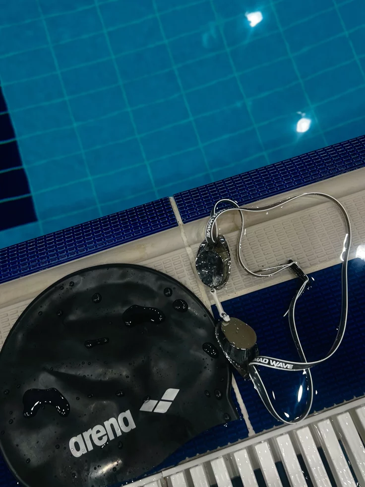
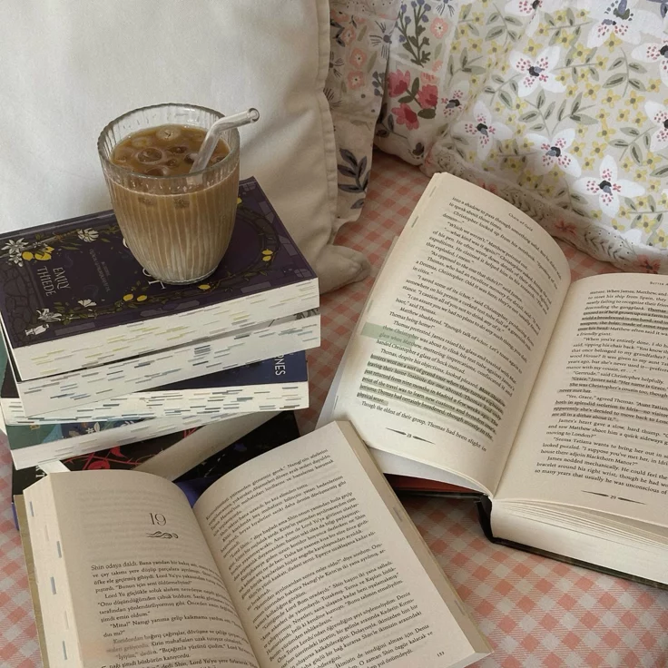
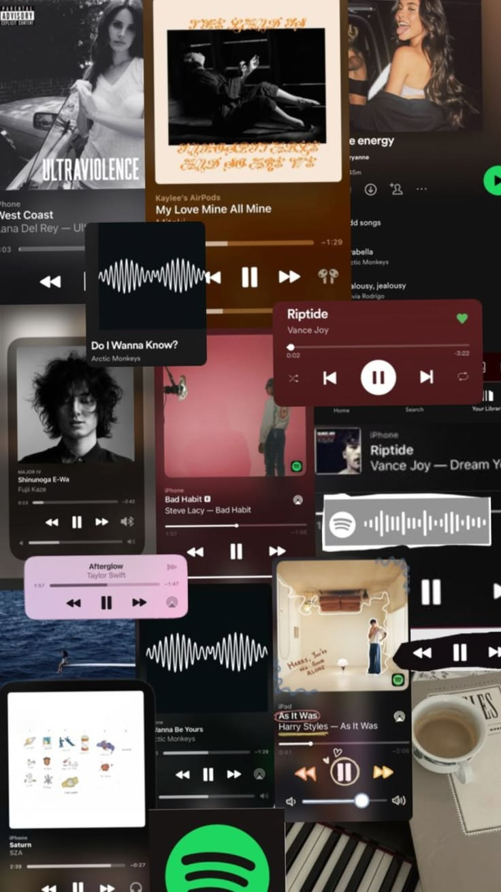
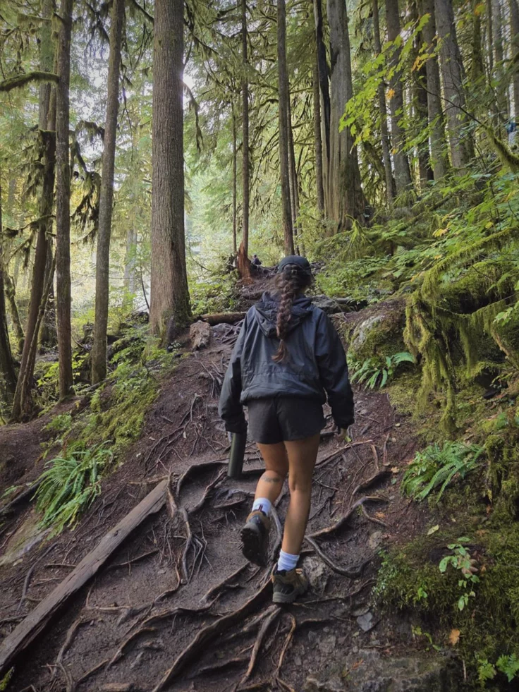
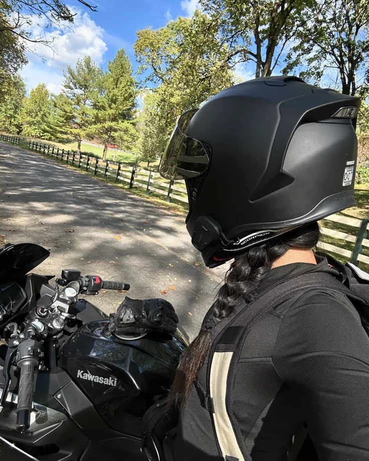
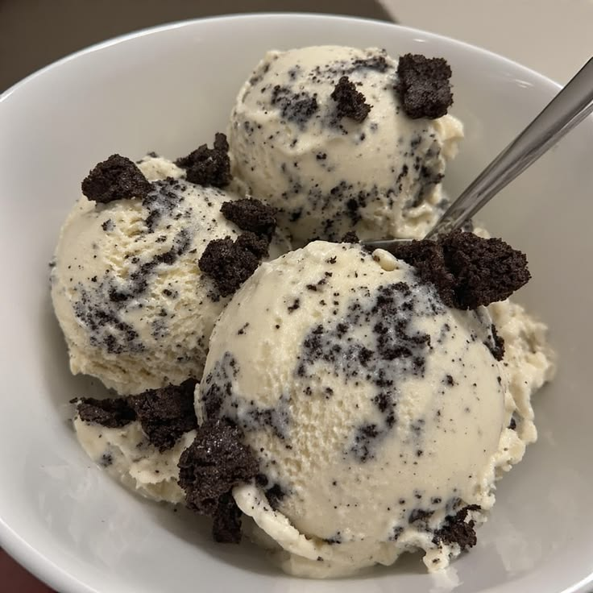
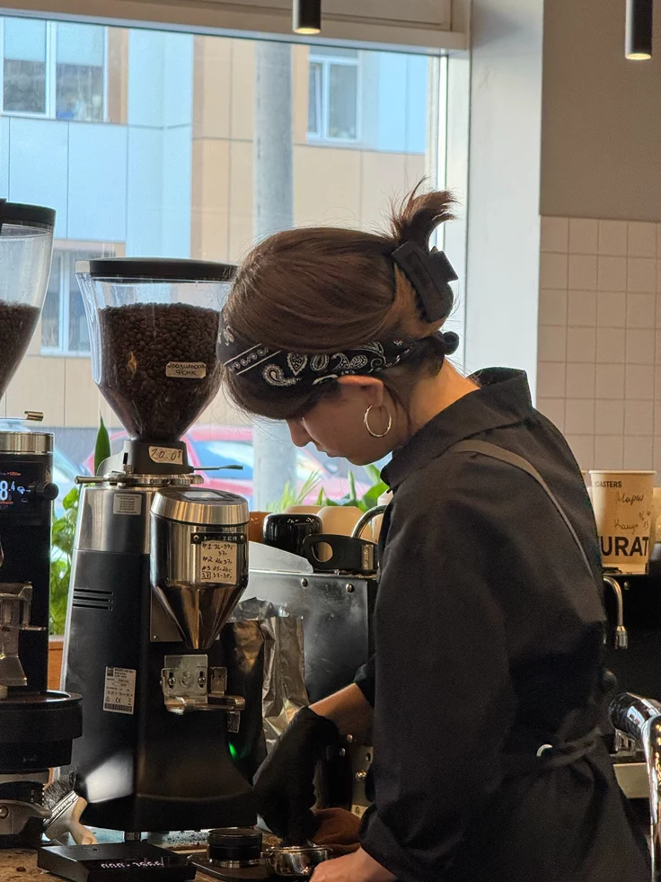

Bernalisa V. Norella
BSOA 2-A Student
I am a friendly and adventurous person who enjoys exploring the outdoors and spending time with my family and friends 💖
Welcome to My Digital Profile !
౨ৎ Basic Details
- Nickname: Berna, Inday, berns
- Age: 20-year-old
- From: Amparo, Patnongon, Antique
- Birthday: 05/04/2006
- Zodiac Sign: Taurus
- Religion: Roman Catholic
౨ৎ Hobbies
- Reading books
- Baking
- Listening to music
- Watching k-drama and movies
- Hanging out with close friends
- Scrolling on social media
- Playing volleyball
- Hiking and mountain trekking
- Jogging with friends
౨ৎ Skills
- My kills include being responsible, adaptable, hardworking. I am able to learn new things quickly, adjust to different situations, and stay focused on my goals..
౨ৎ Career Goals
My goal is to build a successful career in my chosen field while continuing to develop my kills and knowledge. I aim to become a responsible professional who contributes positively to society and achieves personal and professional growh. I also hope to maintain a balanced lifestyle that includes my passion for outdoor avtivities and nature exploration
Interests







“Made with love and late-night thoughts 🌙”